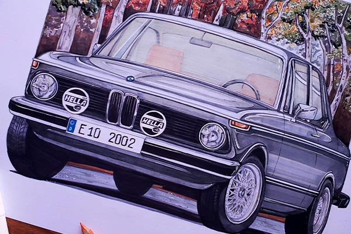
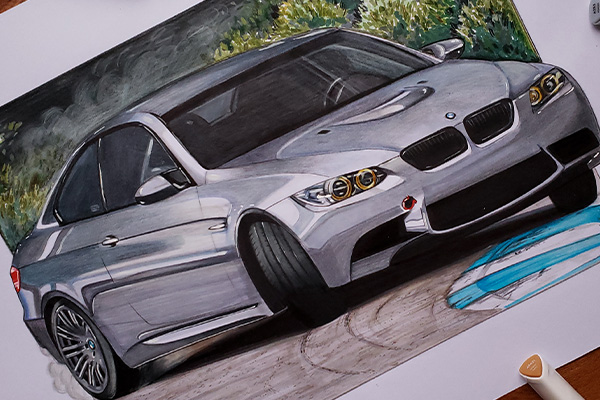
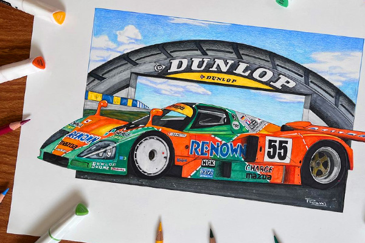

MI EMPRENDIMIENTO
Desde el 2017 me especialicé en realizar retratos automotrices de manera realista. Desarollé esta actividad tanto dentro del marco nacional, como internacional llegando a trabajar con clientes de paises como Corea, Irlanda, Estados Unidos, Perú, Chile entre otros. Por experiencia personal, aprendí que los autos no son solamente un objetos, sino que para muchos estos son un símbolo de unión con amigos y familias, además de formar parte de viajes e historias.

BMW 2002
País: Canadá
País: Canadá

BMW E92
País: Uruguay
País: Uruguay

Toyota Hilux
País: Uruguay
País: Uruguay

Mazda 787b
País: Chile
País: Chile